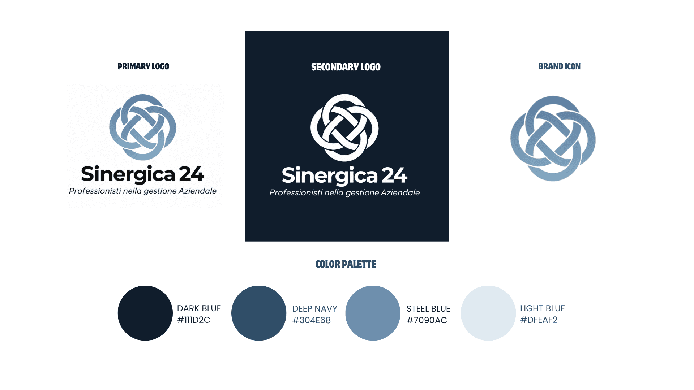
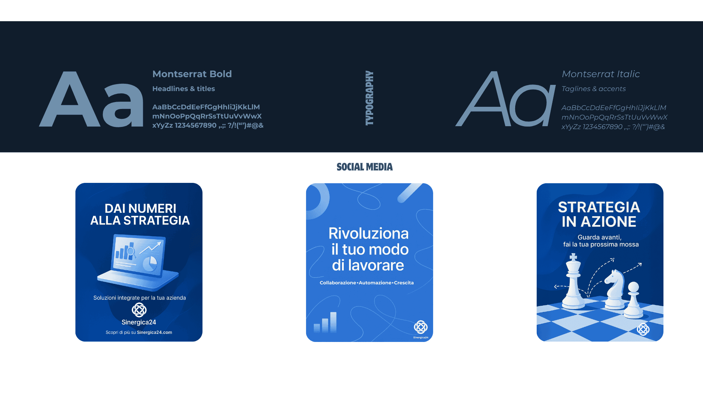
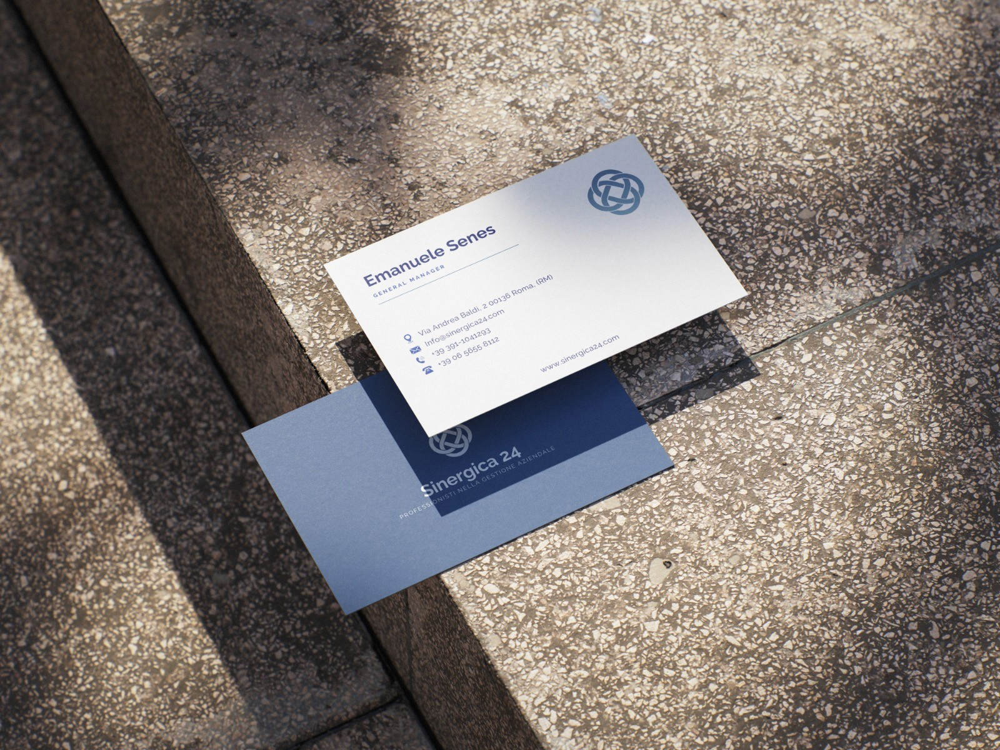
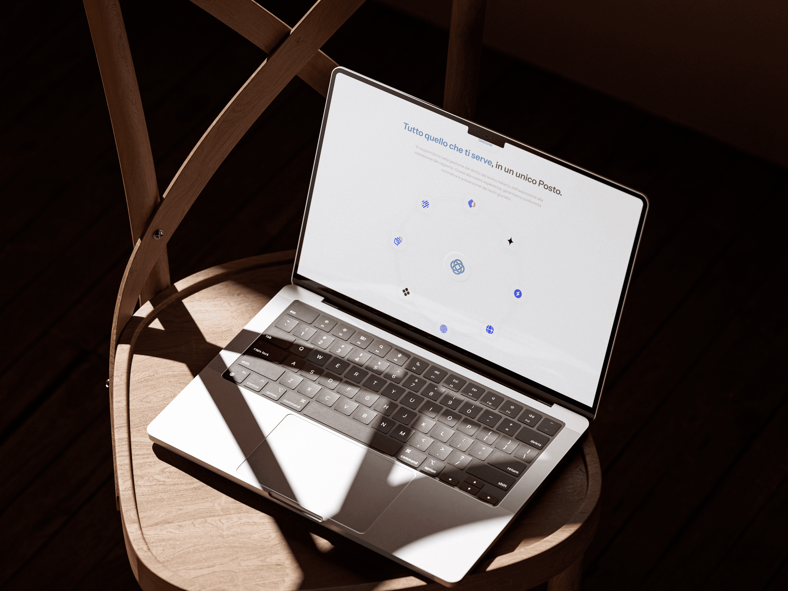
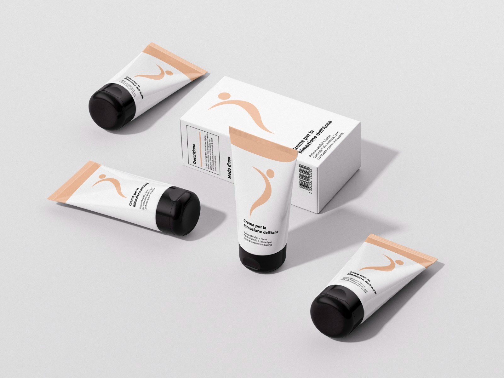

SINERGICA 24
A complete branding and social media management project developed to build a professional, consistent and engaging visual presence for Sinergica 24.









PROJECT DETAILS
Sinergica 24 needed a clear and professional identity that could communicate trust, collaboration and business expertise across both corporate and digital channels.
I developed a cohesive visual system including logo variations, color palette, typography and branded applications. The identity was designed to feel modern, reliable and professional.
I managed the brand’s social media presence by maintaining a consistent visual direction and ensuring that published materials followed the established identity across digital communication.
The brand system was extended across business cards, stationery, corporate materials, social media visuals and the website, creating a cohesive and recognizable experience across print and digital touchpoints.
MORE PROJECTS

Africa Jade Thalasso
Marketing and visual communication developed for Africa Jade Thalasso to strengthen the hotel’s image, promote its services and support digital and promotional campaigns.
BEN YAGHLANE — RAMADAN CAMPAIGN
A three-day Ramadan production focused on photographing and art directing a full month of recipe content for Ben Yaghlane.
CULT BISTRO
Food and lifestyle photography for Cult Bistro, capturing both the dishes and the team to create a warm, authentic and engaging visual representation of the restaurant.
JAB CLUB
Ongoing sports photography collaboration for JAB CLUB, documenting boxing and CrossFit sessions through dynamic, high-energy imagery.